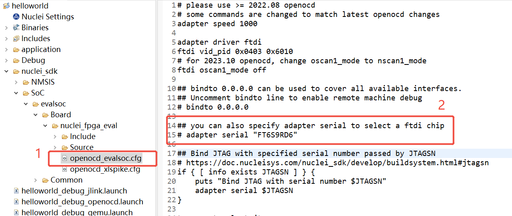

如何同时使用多个蜂鸟调试器进行调试¶
问题说明¶
芯来科技的蜂鸟调试器采用FTDI-FT2232H作为USB接口转换芯片。 在同时连接多个蜂鸟调试器的情况下，如何区分不同的调试器？如何配置OpenOCD识别指定的蜂鸟调试器？
解决方案¶
FT2322H提供了一个可配置的串号（Serial Number），可用于区分不同的调试器。
下载FT_PROG¶
FT_PROG是一个用于烧写FT2322H片内的EEPROM的工具。可用于查看和修改FT2322H的串号。
FT_PROG下载地址：https://ftdichip.com/utilities/
从这个页面中可以找到下载链接，如下图所示：
下载并安装后，会在桌面生成FT_Prog工具的图标。
查看串号¶
使用FT_PROG工具，可以查看FT2322H的串号。
- 连接蜂鸟调试器 建议在无法区分多个蜂鸟调试器的情况下，先只连接一个蜂鸟调试器。
- 打开FT_PROG工具 点击FT_PROG图标打开工具。
- 扫描设备 点击菜单栏
DEVICES中的Scan and Parse，扫描已连接的蜂鸟调试器。

- 查看串号 通过
USB String Descriptors中的Serial Number可以查看蜂鸟调试器的串号。
修改串号¶
在查看串号的页面可以修改蜂鸟调试器的串号。
比如下图中，我将原来的串号FT7DI6ZK改成了FT7DI6ZB

再通过菜单栏DEVICES中的Program选项，可以将修改后的串号写入到FT2322H的EEPROM中。

注意：多个蜂鸟调试器需要分别设置不同的串号来进行区分。
更新OpenOCD配置¶
在使用Nuclei FPGA Evaluation Board时，打开Nuclei Studio中的工程OpenOCD配置文件，可以看到如下内容：

Linux¶
修改openocd_evalsoc.cfg文件，即根据图中红框中的说明进行修改：
# 注意要去掉adapter serial前面的注释符号 #
adapter serial "<Serial Number>"
其中的<Serial Number>需要替换成实际的串号。
修改后的工程即可使用指定串号的蜂鸟调试器进行调试。
Windows¶
注意：在Windows系统下，需要在实际的串号后加上A才是有效的设置。
例如实际的串号是FT7DI6ZB，那么OpenOCD的配置文件需要添加如下设置：
adapter serial "FT7DI6ZBA"